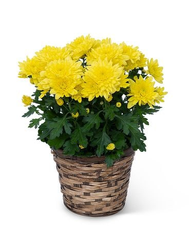

My Vocabulary Page
compare to, compare with v(t) //
compare A to B: when highlighting the similarities of one thing to another
compare A with B: when you are looking for differences
1.1/ He compared this year's historic win to that of 1992 Dream Team.
1.2/ They won the championship in a clean sweep, compared with
last year's game 7 loss.
compared to something
1.3/ Compared to our small flat, Bill’s house seemed like a palace.
1.4/ Compared to Los Angeles, Santa Barbara almost seems rural.
1.5/ "How big is the United States compared to Hong Kong?"
1.6/ "Singapore has a slight edge, with 596 crime cases per 100,000 people,
compared to Hong Kong's 936."
1.7/ "Compared to the small animal, the larger animal had more fat
and a higher body weight."
comparing A to B (in something)
1.8/ Comparing you to her, she is nicer.
1.9/ "Stop comparing Hong Kong to Singapore."
1.10/ "It's a map comparing France to Germany, not continental Europe."
1.11/ "When comparing France to Germany, Italy and. Spain,
the high quality products seem to weigh relatively less in the French exports."
1.12/ Comparing France to Germany in this respect is totally misleading.
compared with something
1.13/ "Compared with my house, yours is huge."
1.14/ My own problems seem insignificant compared with other people's.
1.15/ "Singapore's GDP per capita is US$51,855, compared with Hong Kong's
US$36,173, according to the World Bank."
1.16/ "Life expectancy is more in Australia as compared with New Zealand."
1.17/ "Canada's economy is much larger when compared with New Zealand."
v(i) compare with somebody/something: be as good as them
2.1/ This school compares with the best in the country.
2.2/ This house doesn't compare with our previous one.
2.3/ The disjointed and miserly qualities of U.S. child-care efforts compare
poorly with France's generously supported child-care programs."
2.4/ "The UK lowers the threshold for stamp duty on property purchases through
a company structure: how does this compare with France?"
albeit conjunction //
although; even though
1/ The evening were very pleasant, albeit a little quiet.
2/ an enjoyable, albeit expensive, vacation
3/ He accepted the job, albeit with some hesitation.
4/ Chris went with her, albeit reluctantly.
remark: albeit is never used to introduce an independent clause
alibi n(c) //
evidence that proves that a person was in another place at the time
of a crime and so could not have committed it不在犯罪現場的證據
1.1/ Will his alibi hold up in court?
1.2/ The suspects all had alibis for the day of the robbery.
a strong alibi, a cast-iron alibi
1.3/ He has a cast-iron alibi - he was in hospital the week of the murder.
1.4/ "A criminal defense lawyer can help you form a strong alibi."
a plausible alibi
1.5/ "In Detective Conan, the murderer in a case is usually
the one who has a plausible alibi."
refute/rebut an alibi
1.6/ "The prosecutor will present evidence in court to rebut defendant's alibi."
1.7/ "The government did not provide any evidence to refute
the defendant's alibi."
an alibi defense, an alibi witness
1.8/ "How might a prosecutor try to refute an alibi defense?"
1.9/ "A prosecutor can challenge an alibi defense by refuting the notice
requirements or questioning the quality of the evidence supporting it."
1.10/ "An alibi witness is someone who can provide evidence that a person
was elsewhere when a crime was committed."
n(c) an excuse for something bad or a failure
2.1/ After eight years in power, the government can no longer use
the previous government's policy as an alibi for its own failure.
hold up v //
(usual meaning)
1.1/ How do you hold your phone (up) to take a picture?
1.2/ He held up the book so she could see the cover.
v(i) remain strong and working effectively
2.1/ Will his alibi hold up in court?
2.2/ I hope the repairs hold up until we can get to a garage.
2.3/ She's holding up well under the pressure.
2.4/ I hope the spare tire holds up until we can get to a garage.
v(t) support somebody/something and stop them from falling
3.1/ "The Oasis tree stand can hold a tree up to 10 feet tall."
(see also: stake a tree)
3.2/ "The protagonist feels like a puppet held up by strings and describes
shooting someone who tried to harm them." (see also: a marionette)
v(t) delay somebody or something
4.1/ Traffic was held up for several hours by the accident.
4.2/ An accident is holding up traffic.
4.3/ The project was held up by various legal problems.
v(t) offer something or somebody as an example
5.1/ She's always holding up her children as models of good behaviour.
5.2/ His ideas were held up to ridicule.
hold the line v //
keep a telephone line open
1.1/ Please hold the line.
1.2/ She's been holding the line for five minutes.
1.3/ You may hold the line until I come back.
hold the phone
1.4/ Please hold the phone while I see if Mrs. Smith is available.
1.5/ They asked me to hold the phone while they went to look up the answer.
hold you on the phone
1.6/ "No more! The worst company ever and also the worst call center ever!
Pretening to hold you on the phone for hours!"
1.7/ "Your trusted point of contact won’t hold you on the phone forever;
they’ll let you go about your business and call you back once they’ve resolved
your issue and have an answer for you."
1.8/ "The longer they hold you on the phone, the more likely they are
to be successful."
wait on the phone
1.9/ What do you call the 'hold on' music that plays when you wait on the phone?
see also: hold on (for) a minute
(antonym) hang up: end a phone conversation
2.1/ He started shouting so I hung up on him.
2.2/ Let me speak to Melanie before you hang up.
2.3/ How do I hang up my phone after a call?
resilient adj //
able to quickly return to a previous good condition
1/ This rubber ball is very resilient and immediately springs back into shape.
2/ She's a resilient girl - she won't be unhappy for long.
3/ Stay resilient through the challenges of life.
be resilient to something
4/ These plants are very resilient to rough handling.
5/ "Fulham gained more of a say in midfield and became more resilient
to United's pressure."
be resilient (in order) to do something
6/ "He has had to be resilient to make it this far."
7/ "You need to be resilient to build a successful busines."
8/ You need to be resilient enough to cope with the demands and
pressures of police work.
see also: tough
asthma n(u) // or //
(a medical condition) 哮喘
1/ "Asthma is a common long-term condition that can cause coughing, wheezing,
chest tightness and breathlessness.
2/ The main symptoms of asthma are wheezing, shortness of breath,
coughing and a tight chest."
develop asthma
3/ "People can develop asthma after exposure to things that irritate the airways."
suffer from asthma
4/ "About 300 million people suffer from asthma globally,
with 250,000 annual deaths traced to the disease."
5/ "Children of mothers with asthma are three times more likely to
suffer from asthma."
an asthma sufferer
6/ "A severe asthma sufferer has been taking steroids for over 30 years."
7/ "I am an asthma sufferer and have been since the age of three."
an asthma attack
8/ Medics tended to a boy who was having an asthma attack.
9/ "If you or someone you know has ever experienced an asthma attack,
you know how scary and overwhelming it can be."
a treatment of asthma, a reliever inhaler
10/ Most people with asthma will be given a reliever inhaler.
11/ "Inhalers, which are devices that let you breathe in medicine,
are the main treatment of asthma."
12/ "Reliever inhalers, usually blue, are taken to relieve asthma symptoms quickly."
rant v(i) //
speak or complain about something in a loud and/or angry way
rant (on) about something
1/ She was ranting on about the unfairness of it all.
2/ He's always ranting about the government.
rant at somebody
3/ "Take things easy, and stop ranting at me about work."
4/ "He keep ranting at me about how he's broke for the month."
(idiom) rant and rave (about something):
show that you are angry by shouting or complaining loudly for a long time
5/ I got really wound up and started ranting and raving.
6/ I got fed up with my mother ranting and raving about my clothes all the time.
chrysanth n(c) //
a short form of chrysanthemum //
1/ Claire Maslin was out in the vicarage garden cutting chrysanthemums.
2/ The 'Five Flower Tea' is made with chrysanthemum, Japanese honeysuckle,
common coltsfoot, rose, pagoda tree flower and water.
3/ "A bundle of chrysanthemum is on top of the tomb, yellow and fresh."
4/ "Chrysanthemum flowers bloom in a range of colors in shades of
white, yellow, orange, lavender, purple, or red."
at your service idiom //
at somebody's service: ready or available for somebody's use
1.1/ I'm totally at your service - just tell me what you need me to do.
1.2/ I am happy to be at your service if you have any questions.
1.3/ They made sure there was a car at her service when she got there.
1.4/ The cabin staff are at your service throughout the flight.
1.5/ "I am at your service as a dreamer and a man of action."
1.6/ "Peter is at your service to provide you with info about Malta."
at the service of somebody
1.7/ Healthcare must be at the service of all who need it.
1.8/ "We will inshallah put this budget at the service of our nation
following the negotiations to be held at the commissions and general assembly
of the GNAT."
(convention) use 'at your service' after your name as a formal way
of introducing yourself to someone and saying that you are willing to
help them in any way you can.
2.1/ "Chef Tom, at your service."
2.2/ She bowed dramatically. 'Anastasia Krupnik, at your service,' she said.
2.3/ "Auntie Noura & Uncle Peter at your service."
rocky adj //
made of rock and therefore usually rough and difficult to travel along
1.1/ She scrambled along the rocky path.
1.2/ "Go for an enchanting walk along the rocky coast of Bornholm /'bɔrn.həʊm/.
1.3/ "Five military vehicles drive on a rocky road with
mountains in the background."
sea also: rough, uneven, rugged
(adj) uncertain and difficult and not likely to last long
2.1/ Their relationship got off to a rocky start.
2.2/ "If I was in a rocky marriage, would I stay in the marriage for the sake
of my children or would I get a divorce?"
2.3/ "Giselle has been in a rocky relationship with her boyfriend, Jose."
synonym: unstable
rough adj //
not even or smooth, often because of being in bad condition
1.1/ It was a rough mountain road, full of stones and huge holes.
1.2/ The skin on her hands was hard and rough.
1.3/ Trim rough edges with a sharp knife.
(adj) not exact or detailed
2.1/ She made a rough estimate(/calculation) of the likely cost.
2.2/ I've got a rough idea of where I want to go.
2.3/ There were about 20 people there, at a rough guess.
2.4/ I just completed a rough draft of my speech.
(adj) not made in a careful or expensive way
3.1/ I made a rough table out of some old boxes.
3.2/ "We make do with a rough estimator called trust."
3.3/ "These poor cyclists have to make do with a rough track, usually with
pedestrians walking along it."
3.4/ "Here is rough paper for making notes on."
(adj) not gentle or careful; violent
4.1/ This watch is not designed for rough treatment.
4.2/ They complained of rough handling by the guards.
4.3/ She doesn't like playing with the rough kids.
4.4/ Don't try any rough stuff with me!
4.5/ One carer was sacked for being rough with a patient.
4.6/ Things got a bit rough, and the police were called.
a rough area: where there is a lot of violence or crime
4.7/ He had been brought up in a rough area of London.
(adj) having large and dangerous waves; wild and with storms
5.1/ It was too rough to sail that night.
5.2/ We had a rough passage across to the island.
5.3/ There's no way he could have swum ashore in such rough weather.
5.4/ There were rough seas in the area at that time.
(adj) difficult or unpleasant
6.1/ It must be rough to have two kids and nowhere to live.
6.2/ He's had a really rough time recently.
6.3/ We'll get someone in to do the rough work
6.4/ You two are obviously going through a rough patch right now.
synonym: tough
push back
to delay something so that it happens later than planned; postpone
1/ The target date for construction has been pushed back.
2/ push back the deadline for the homework
push back (a period of time)
3/ The show's start time has been pushed back ten minutes.
4/ The deadline has been pushed back two weeks.
push back to (another time)
5/ They pushed the meeting back to Thursday because two of the officers
were sick.
push back until (another time)
6/ ASX confirms CHESS replacement push back until April 2023.
7/ A Missouri judge intends to push back until early 2022 the trial for
St. Louis' lawsuit over the departure of the NFL's Rams to Los Angeles.
strip v(t) //
strip somebody of something: to take away something important from
someone as a punishment, for example their title, property, or power
1/ Captain Evans was found guilty and stripped of his rank.
2/ He was attempting to win back the title that was stripped from him
in 1967 for refusing to fight in the Vietnam War.
to take out everything that is not part of the structure of a room or building
3/ The couple first stripped the kitchen of its all units and appliances.
strip off: to remove your clothing, or to remove the clothing of someone else
4/ Suddenly he stripped off and ran into the sea.
5/ He had been striped (off) naked, beaten and robbed.
6/ I stripped the blankets off the bed.
7/ It was so hot that we stripped off our shirts.
strip (something) off (someone)
8/ The paramedic stripped the shirt off the burn victim.
(compare: The paramedic stripped off the patient's shirt.)
strip (something) off of her/him/us/them/you/it
9/ The paramedic stripped the shirt off of her and began to treat her burns.
deprive v(t) //
deprive somebody/something of something:
to take something, esp something necessary or pleasant, away from someone
1/ Why should you deprive yourself of such simple pleasures?
2/ He claimed that he had been deprived of his freedom.
3/ You can't function properly if you are deprived of sleep.
4/ They were imprisoned and deprived of their basic rights.
5/ "A woman taking off her clothes or posing scantily clad is an object
deprived of dignity and self-respect."
setback n(c) //
see also: set something back
something that happens that delays or prevents a process from developing
1/ Sally had been recovering well from her operation, but yesterday
she experienced(/suffered) a setback.
2/ There has been a slight(/temporary) setback in our plans.
see also: difficulty, hindrance, obstacle, reversal, stumbling block, impediment
set something back
to delay an event, process, or person
1/ The opening of the new swimming pool has been set back by a few weeks.
2/ The launch of the new version could be set back by at least a year.
3/ A war would inevitably set back the process of reform.
to cost someone an amount of money
4/ Our vacation set us back over $3000.
see also: hinder, impede
somewhat adv //
to some degree
1/ The resort has changed somewhat over the last few years.
2/ She's somewhat more confident than she used to be.
somehow adv //
in a way; by some means
1/ It won't be easy, but we will get across the river somehow.
2/ I'm not sure how, but somehow or other we'll raise the money.
overrun v(i,t) //
to continue past an intended limit, especially a finishing time or a cost
1/ My evening class overran by ten minutes.
2/ It looks as if we're going to overrun our budget.
to overwhelm the place quickly in an unwanted maner
3/ Rebel soldiers overran the embassy /'embəsi/ last night.
4/ a tiny island overrun by tourists
go past v
go past (somebody/something): pass by or around somebody/something
1/ I went past the store the other day but it was closed.
2/ You went right past Tom. Did you mean to?
3/ I need to get into the building to retrieve my briefcase - please let me go past!
4/ I didn't want to drive any faster on the highway, so I moved closer
to the curb to let the cars behind me go past me.
5/ "If I go past the park, I don't enter the park but walk alongside it."
see also: get past somebody or something, go across somewhere
pass through
You pass through something if you go through some part of it as
you're walking or driving.
1/ I passed through the tunnel on my way here.
2/ To get to many places from Narita by train you must pass through Tokyo.
compliment n(c) //
a remark or action that expresses approval, admiration, or respect
1.1/ It's a great compliment to be asked to do the job.
pay somebody a compliment
1.2/ She paid him a high compliment by saying she read all his books.
1.3/ "After all, these services are free and we take it as a compliment if you ask."
take it as a compliment (= be pleased_)
1.4/ I take it as a compliment when people say I look like my mother.
1.5/ He was surprised by her remark, but decided to take it as a compliment.
1.6/ "You understand the problem because you're so much older."
"I'll take that as a compliment!"
fish for compliments (= try to get compliments)
1.7/ Are you fishing for compliments?
1.8/ We know you're a smart kind, Dan. You don't need to fish for compliments
by talking about the one C you got.
return the compliment
1.9/ 'Thank you!' is the best response to a compliment.
1.10/ "You helped me last week, so I'll return the compliment and do your filing."
1.11/ "You can return the compliment by saying something nice to them."
1.12/ "You return the compliment with your fresh perspective and
enthusiastic approach."
n(plural) compliments: polite words or good wishes,
especially when used to express praise and approval
2.1/ Compliments of the season!
2.2/ That was an excellent meal! My compliments to the chef.
2.3 Please give my compliments to your parents.
with your compliments: if you give something to somebody
with your compliments, you give it to that person free
2.4/ Please accept these flowers with the compliments of the manager.
2.5/ We enclose a copy of our latest brochure /brəʊ'ʃʊr/, with our compliments.
compliment v(t) //
praise or express admiration for someone
3.1/ I was relieved when they complimented the dinner.
compliment somebody
3.2/ "You do not have to compliment someone who has complimented you."
compliment somebody on something
3.3/ I was just complimenting Robert on his wonderful food.
3.4/ She complimented him on his excellent German.
3.5/ I must compliment you on your handling of a very difficult situation.
3.6/ I like to compliment you on all the hard work you have put in.
3.7/ I have to compliment you on this dinner you made—it's just delicious!
3.8/ The salesman just complimented me on my beautiful smile!
compliment something to somebody
3.9/ "To which of my fair cousins, should I compliment the excellence
of the cooking?"
appreciate v(t) //
recognize the good qualities of somebody/something
1/ You can't really appreciate foreign literature in translation.
2/ His talents are not fully appreciated in that company.
3/ Her abilities are not fully appreciated by her employer.
4/ I’m not an expert, but I appreciate fine works of art.
5/ The sound quality was poor so we couldn't fully appreciate the music.
6/ Over the years he came to appreciate the beauty and tranquillity
of the river.
v(t) be grateful for something that somebody has done; welcome something
7/ Thanks for coming. I appreciate it.
8/ Your support is greatly appreciated.
9/ We really appreciate all the help you gave us last weekend.
10/ She really appreciated his offers of help.
11/ I appreciate your concern, but honestly, I’m fine.
12/ I would appreciate any comments(/feedback) you might have.
13/ We really appreciate the extra effort you're making.
appreciate doing something
14/ I appreciate having the opportunity to discuss these important
issues with you.
15/ I don't appreciate being treated like a second-class citizen.
appreciate somebody doing something
16/ I appreciate your making the effort to come.
17/ We would appreciate you(/your) letting us know of any problems.
I would appreciate it...
18/I would appreciate it if you paid in cash.
19/ I’d appreciate it if you let me get on with my job.
20/ I would appreciate it if you could let me know in advance whether or not
you will be coming.
v(t) (realize) understand that something is true
21/ We appreciate the need for immediate action.
22/ What I failed to appreciate was the distance between the two cities.
23/ The experience helped me understand and appreciate some of
the difficulties people face.
24/ We didn't fully appreciate that he was seriously ill.
25/ I don't think you appreciate how expensive it will be.
appreciate the significance(/value/importance) od something
26/ He did not fully appreciate the significance of signing the contract.
27/ "After years of the profession having come to seem vague or vacuous,
are we about to appreciate the value of a proper curator?"
appreciate that ...
28/ We appreciate that caring for children is an important job.
appreciate wh-clause...
29/ I don't think you appreciate how much time I spent preparing this meal.
30/ It is difficult to appreciate how bad the situation had become.
see also: agree to something
appreciation n(u) //
pleasure that you have when you recognize and enjoy the good qualities
of somebody/something
appreciation of something
1/ Max has no appreciation of the finer things in life.
(slang: the finer things in life)
2/ She shows little appreciation of good music.
3/ It helps children to develop an appreciation of poetry and literature.
in appreciation
4/ The crowd cheered in appreciation.
n(singular,u) the feeling of being grateful for something
appreciation of something
5/ The chairman asked me to express our appreciation of all your hard work.
6/ n(singular) The clock was presented to Snell by his colleagues
as an appreciation of his work and friendship.
appreciation for something/somebody
7/ Children rarely show any appreciation for what their parents do for them.
8/ These flowers are a token of my appreciation for all your help.
9/ I would like to express my appreciation for my friends and family,
and all the support they've given me over the years.
10/She never shows any appreciation for our efforts.
in appreciation of something
11/ He was presented with a watch in appreciation of his long service.
12/ Please accept this gift in appreciation of all you've done for us.
remark: 'appreciation of' expresses the gratitude of more specific
benefits and qualities, while 'appreciation for' expresses more general
gratitude and thankfulness rather than a specific benefit.
n(singular,u) (comprehension)
13/ I had no appreciation of the problems they faced.
provoke v(t) //
to cause a reaction, especially a negative one
1/ The release from prison of two of the terrorists has provoked a public outcry.
2/ The divers and the climbers were charged with vandalism and hooliganism aimed
to destabilize the situation in Moscow and provoke hatred.
3/ This would then provoke public anger again, driving the public, the great masses
to take to the streets again.
4/ These murders have provoked outrage across the country.
to make or try to make a person or an animal angry
5/ He was clearly trying to get at me but I refused to be provoked.
6/ I was provoked into the argument.
see also: outrage, outcry
invoke v(t) //
to use something such as a law to help you when you want to do something
1/ Regulators said they would invoke legal powers to enforce the change.
2/ Police can invoke the law to regulate access to these places.
evoke v(t) //
to make someone remember something or feel an emotion
1/ That smell always evokes memories of my old school.
2/ a detergent designed to evoke the fresh smell of summer meadows /'medəʊz/.
3/ The smell of chalk always evokes memories of my school days.
adopt v(i,t) //
to take another person’s child legally into your own family to raise as your own child
1/ They've adopted a baby girl.
2/ She lives in a 3-bedroomed home with five dogs she adopted
from an animal shelter.
v(t): to accept or start to use something new
3/ (+ in) I think it's time to adopt a different strategy in my dealings with him.
4/ The new tax would force companies to adopt energy-saving measures.
5/ Why and how do state governments adopt and implement
"Managing for Results" reforms?
v(t): to start behaving in a particular way, especially by choice
6/ Roz has adopted one or two funny mannerisms since she's been away.
7/ Nine ways to actually adopt the better habits you know will help you succeed
habit n(c) //
something that you do regularly or usually, often without thinking about it
because you have done it so many times before
1/ You need to change your eating habits.
2/ Most of us have some undesirable habits.
a habit of doing something
3/ The strategy is helping children develop the habit of reading for fun.
4/ These things have a habit of coming back to haunt you.
get into a habit
5/ I'm trying not to get into the habit of always having biscuits with my coffee.
6/ I've got into the habit of turning on the TV as soon as I get home.
let it become a habit
7/ It's all right to borrow money occasionally, but don't let it become a habit.
pick up a habit
8/ I was taught to drive by my boyfriend and I'm afraid I've picked up some
of his bad habits.
take to a habit (see also: take to)
9/ Once you take to the habit of deception, every new lie comes that much easier.
get out of a habit (see also: get out of a routine)
10/ I must get out of the habit of finishing people's sentences for them.
kick/break a habit
11/ I'm trying to break the habit of staying up too late.
12/ She used to bite her nails but she kicked the habit last year.
13/ "If you really want to kick a habit or create a new one, you need to
change up your environment."
in the habit of doing something
14/ I'm not really in the habit of looking at other people's clothes,
but even I noticed that awful suit!
see also: a daily routine
n(u) out of habit
15/ She always closed the door softly out of habit.
16/ Many people will likely continue to shoplift out of habit.
n(c) (informal) a strong need to keep using drugs, alcohol
or cigarettes regularly
17/ She's tried to give up smoking but just can't kick the habit.
18/ A lot of drug addicts get into petty crime to support their habit.
19/ His cocaine habit ruined him physically and financially.
see also: an addiction to alcohol, be addicted to drugs, a drug addict
silhouette n(c,u) //
a dark shape seen against a light surface 剪影
1/ The silhouette of the bare tree on the hill was clear against the winter sky.
n(u) in silhouette
2/ An unidentified witness was shown on camera in silhouette.
3/ The mountains stood out in silhouette.
4/ "The Christmas advent houses in silhouette"
5/ "Sunset with mountains in silhouette."
silhouette v(t) //
make something appear as a silhouette
1/ Kate was silhouetted in the pale light of the porch.
be silhouetted on the horizon
1/ We could see a row of camels silhouetted on the horizon.
2/ "The palm tree and the girl are the focus of the picture, but you can also
see a long line of cargo ships silhouetted on the horizon."
be silhouetted against something
2/ A figure stood in the doorway, silhouetted against the light.
2/ The castle was silhouetted against the sky.
ready adj //
prepared and suitable for fast activity
1.1/ Are you ready to leave?
1.2/ Are you ready? Hurry up - we're late.
1.3/ Just a minute - I'm almost ready.
1.4/ "Shall we go?" "I'm ready when you are!"
be ready to something
1.5/ Are you ready to order, Madam?
1.6/ Right, we're ready to go.
1.7/ We were getting ready to go out.
1.8/ She's always ready to help.
1.9/ Volunteers were ready and waiting to pack the food in boxes.
get (somebody/something) ready
1.10/ We're leaving at eight o'clock, so you've got half an hour to get ready.
1.11/ I'm just getting the kids ready for school.
get/be ready for something
1.12/ The army are said to be ready for action.
1.13/ The army are said to be ready for action.
1.14/ The concert hall was made/got ready for the performance.
see also: readily
(idiom) at the ready: prepared to be used or to act immediately
2.1/ We all had our cameras at the ready.
2.2/ Have your questions at the ready.
2.3/ He stood by the phone, pencil at the ready.
see also: at hand
at hand idiom //
near in time or position
1/ The space shuttle crew must stay completely focused on the task at hand.
2/ We want to ensure that help is at hand for all children suffering abuse.
3/ "A check must be carried out to ensure that the first aid box is at hand
and that its contents comply with regulations."
4/ The property is ideally located with all local amenities close at hand.
take place v //
take place: happen
1/ The concert takes place next Thursday.
2/ Newington Easter commemoration takes place on Monday.
3/ A pitched battle took place between the two gangs.
4/ The story takes place in the 18th century.
5/ "The ceremony will take place today at 11am in the town hall."
in place phrase //
in place: if something is in place, it is in its usual or correct position
1.1/ The chairs are all in place.
1.2/ He screwed the shelf in place.
put/keep/hold something in place
1.3/ "I always tell you to put your toys in place after playing."
1.4/ "A tripod holds the camera in place."
1.5/ "Wrist wraps help to keep your hands in place."
(phrase) in place of somebody/something:
instead of somebody/something
2.1/ You can use margarine /''ma:rdʒə'ri:n/ in place of butter in some recipes.
2.2/ Water is a hydrating and refreshing beverage that can be enjoyed
anytime, anywhere in place of alcohol.
2.3/ "Almond milk is used in place of milk, but has a consistency closer to water."
in place of doing something
2.4/ "Imagine a world where companies focus only on the strengths of
each employee in place of criticizing their weaknesses."
(phrase) in the first place: in the beginning
3.1/ I should have told you in the first place.
3.2/ We should never have agreed to let him borrow the money in the first place.
3.3/ If you hadn't been so rude in the first place, none of this would have happened.
3.4/ The trousers shrank when I washed them, but they weren't really big enough
in the first place.
ravage v(t) //
to cause great damage to something
1/ The area has been ravaged by drought/floods/war.
n(plural) the ravages of disease/time/war: the damage caused by disease/time/war
2/ Her face showed the ravages of time.
bygone adj //
belonging to or happening in a past time
1/ a bygone era
let bygones be bygones
2/ Just let bygones be bygones and be friends again.
let go of someone/something
to stop holding something or someone
1/ Brandon let go of her hand and ran across the street.
2/ let go of the past
en route adv //
on the way to or from somewhere
1/ I stopped en route (to the party) and got some wine.
2/ The bomb exploded while the plane was en route from Paris to Tokyo.
3/ (adj) weather-related enroute delays
case-by-case adj
on a case-by-case basis
1/ Wage increases will be negotiated on a case-by-case basis.
forgo v(t) //
(also forego) to not have or do something enjoyable; give up
1/ I shall have to forgo the pleasure of seeing you this week.
2/ We forgo discussing these display techniques as they are outside
the scope of this paper.
... of which ...
defining relative clauses
1/ He's written a book of which I've forgotten the name.
2/ He's written a book the name of which I've forgotten.
3/ (whose) He's written a book whose name I've forgotten.
4/ (that) He's written a book that I've forgotten the name of.
non-defining relative clauses
5/ She ate three ice creams, of which her favourite flavour was orange.
6/ The team won a silver medal, of which they were very proud.
7/ I have two books, one of which is borrowed.
many of which
8/ There are extremely serious conditions, many of which are terminal.
9/ There are nice ideas, many of which ring true (=sound true).
put out
extinguish
1/ Firefighters have been called to put out the fire in the city centre.
2/ Would you mind putting your cigarette out, please?
put out your tongue/hand
2/ She put out her hand to shake mine.
to produce information and make it available for everyone to read or hear;
to publish; to release
3/ Police have put out a warning to people living in the area.
the finer things in life
luxury items, for example expensive sports cars, jewelry and watches, etc
1/ He likes the finer things of life such as custom made clothes and expensive
high powered automobiles /'ɔ:tə.məʊ.bi:lz/.
the things that you value and appreciate, not limited to expensive trinkets or stuff
we can rarely afford, but including things that we sometimes take for granted.
2/ With family, it should be one of the many finer things in your life.
3/ No matter where your interests lie, the world is full of the finer things
just waiting to be tried.
beige n(u) //
(a color) 米色
1/ The shoes are available in navy blue or beige.
2/ She wears a lot of beige.
3/ "People often say that my skin color is beige."
a shade of beige
4/ "I am looking for a shade of beige with a spot of orange."
(adj) a beige object
5/ "I try to decide what color shoes to wear with a beige dress outfit."
6/ "Get the best deals on beige stockings for women."
a beige skin tone
7/ "If you have a beige skin tone, your skin will appear a bit darker
than fair but not as dark as olive."
landslide n(c) //
a mass of rock and earth falling unexpectedly down a steep slope 山泥傾瀉
1/ landslides triggered by hurricane Maria
2/ landslides triggered from Tropical Storm Erika
3/ (adj) a landslide victory(= a one-sided victory)
landscape n(c) //
(usually singular) a large area of land, esp in relation to its appearance
1.1/ The landscape is dotted with the tents of campers and hikers.
1.2/ "A landscape is part of Earth's surface that can be viewed
at one time from one place. It consists of the geographic features that mark,
or are characteristic of, a particular area."
the landscape of somewhere
1.3/ The woods and fields are typical features of the English landscape.
1.4/ "The landscape of the city consists of diverse natural resources and
supporting evidence of its multiculturalism."
1.5/ "In winter, the landscape of the desert turns white when
the toadflax linaria flowers."
dominate the landscape
1.6/ The mountains dominate the landscape.
1.7/ The cathedral dominates the landscape for miles around.
a rural landscape
1.8/ "The village has a rural landscape."
1.9/ "Northumberland has a rural landscape like no other place in the world."
1.10/ "Sukamulya village has a rural landscape with main activities such as
agriculture, plantations, and agroforestry."
1.11/ "The village has a rural landscape with rocky cork walls, branches
and scattered vegetation."
1.12/ "Support farming and maintain agricultural land to keep the rural landscape
of the town and help the economy."
an urban landscape
1.13/ "A big city has an urban landscape."
1.14/ "This particular city has an urban landscape composed of many historical
buildings, whose façades are covered by Portuguese tiles. "
1.15/ "There’s something unique about having a city that has an urban landscape
with commercial settings and tall buildings and spaces and plazas where people
can gather for cultural arts events."
1.16/ "Enjoy the urban landscape of Hong Kong by riding
the hundred-year-old tram."
1.17/ "Gentrification slowly transformed the urban landscape of Hong Kong
completely in recent years."
1.18/ "It is a pleasure to see so many photographer that appreciate
the urban landscape."
1.19/ Demolition firms and builders are busy changing urban landscapes.
a bleak/barren landscape
1.20/ "I saw nothing but the bleak landscape of Dartmoor, the tors rising
like strange castles from the rough and rocky ground."
1.21/ " The poem tells the story of a chance encounter with a traveler who
narrates a barren landscape in the desert where two gigantic, headless stone legs
remain as the only evidence of a once-grand statue."
a rugged landscape
1.22/ What she remembers vividly is the church and the rugged landscape.
1.23/ "Explore the rugged landscape of New Mexico on foot or on horseback."
1.24/ "The routes are tough, but in such a rugged landscape that is to be expected."
a green landscape
1.25/ "The goal of rainwater management in a green landscape is to slow it,
store it, spread it, and sink it."
1.26/ "The green landscape of the island, sunny beaches, ancient architecture,
and phenomenal tea fields attract tourists starving for exoticism from
all over the world."
a rocky landscape
1.27/ "There is a waterfall in a rocky landscape."
a hilly landscape
1.28/ "Moldova has a hilly landscape but has struggled economically,
leading to emigration of skilled individuals in search of better opportunities."
a natural landscape
1.29/ The garden has been designed to harmonize with the natural landscape.
1.30/ "A natural landscape is made up of a collection of landforms,
such as mountains, hills, plains, and plateaux."
see also: terrain, scenery
n(c) (usually singular) the characteristic features of an area of activity
2.1/ The political landscape is changing.
2.2/ Their songs altered the landscape of popular music.
2.3/ We can expect changes in the political landscape.
2.4/ We would have a very different economic landscape today if there
had been no immigration.
scenery n(u) //
the general appearance of the natural environment, esp when it is beautiful
1.1/ The scenery is magnificent.
1.2/ The majestic Montana scenery will leave you breathless.
1.3/ The river passes through a rich variety of scenery.
1.4/ For a complete change of scenery, take a ferry out to one of the islands.
enjoy/admire the scenery
1.5/ We stopped on the mountain pass to admire the scenery.
1.6/ They stopped at the top of the hill to admire the scenery.
1.7/ "Drive slow and enjoy the scenery. Drive fast and join the scenery."
wonderful/awesome/incredible scenery
1.8/ This postcard doesn't do justice to the wonderful scenery.
1.9/ This area has some of the most awesome scenery.
1.10/ You drive through the most incredible scenery to get there.
beautiful/breathtaking/spectacular scenery
1.11/ The hotel lies amid spectacular mountain scenery.
1.12/ "Every bridge plays its own role and has a unique charm, and they all
form the beautiful scenery of this city!"
1.13/ "Soak in the breathtaking scenery of the ocean right from your balcony."
the scenery of (the) nature
1.14/ "Without mountains, the scenery of nature would be incomplete and dull!"
1.15/ "Indulge in the scenery of nature and get inspired for new life achievements."
1.16/ "We are currently in Cappadocia. The scenery of the nature is just incredible."
1.17/ "Beautiful is the scenery of the nature with all kinds of flowers in full bloom."
remark: scenery is everything that makes up the scene you are looking at.
It can be entirely manmade structures -- buildings, streets, etc.
A landscape is a view that includes mainly the land and its features -- hills and mountains,
trees and other plants, streams and ponds, etc. A seascape is an ocean scene.
A cityscape is an urban scene. The scenery can be a landscape, a seascape, a cityscape,
or some combination.
(idiom) blend into the scenery
2.1/ "It's that time of the year where Oszkar blends into the scenery!"
2.2/ "The shy student tried to blend into the scenery and not be noticed."
2.3/ "We can surmise that Asai himself had blended into the scenery
of Inujima through his residency."
2.4/ "I blend into the scenery of white people wearing outdoor-activity clothing
until they clock that I'm not actually a guy."
see also: blend into the background, blend in with the crowd,
blend into the surroundings
cityscape n(c) //
the appearance of a city or urban area, especially in a picture; a picture of a city
1/ The park is a small patch of green in the cityscape.
2/ Billions of pounds of new investment have been pumped into the city's economy,
transforming the cityscape.
skyline n(c, usually singular) //
a shape or pattern made against the sky, especially by buildings
1/ You get a good view of the New York skyline from the Statue of Liberty.
2/ Where to get the best view of the Hong Kong skyline
concern v(t) //
to cause worry to someone
1/ The state of my father's health concerns us greatly.
2/ It concerns me that he hasn't been in contact.
to involve someone or something; have to do with
3/ This is an issue that should concern everyone.
4/ Matters of pollution and the environment concern us all.
5/ What I have to say to Amy doesn't concern you.
concern yourself: to become involved with something,
or worried about something
6/ There's no need for you to concern yourself with what happened.
7/ "No need to concern yourself with me. Go on."
to whom it may concern
remark: A problem concerns us; we consider a problem.
concern n(c,u) //
n(c,u) a matter of importance especially because it involves you
8/ What were the major concerns of the writers from this period?
9/ Issues of good and evil are not our primary concern here.
10/ The company's sole concern is to ensure the safety of its employees.
11/ There's a matter of some concern that I have to discuss with you.
not somebody's concern/ none of somebody's concern
12/ I don't want to hear about it - it's no concern of mine!
13/ His affairs were none of her concern.
n(c,u) a worried feeling, or a state of anxiety
14/ Parents expressed a lot of concerns about the changes in school policies.
be of concern = to be important
15/ The results of the election are of concern to us all.
concerned adj //
worried
1/ I'm a bit concerned about/for your health.
2/ He was concerned to hear that two of his trusted workers were leaving.
3/ Concerned parents have complained about the dangerous playground.
4/ He called the police because he was concerned for Gemma’s safety.
5/ She is concerned about how little food I eat.
involved or involving
6/ Her job is only concerned with costs and fees.
7/ I'd like to thank everyone concerned for making the occasion run so smoothly.
8/ (+ in) There's no evidence that he is concerned in any criminal activity.
9/ They arrested all those concerned in the kidnapping
as far as sombody is concerned = in a particular person's opinion
10/ As far as I'm concerned, feng shui doesn't work.
as far as something is concerned
11/ As far as unemployment's concerned, a change of policy on job creation
would be a good idea.
be concerned with something/somebody
12/ Today's lesson is concerned with punctuation.
stab v(t) //
push a sharp, pointed object into somebody, killing or injuring them
be stabbed to death
1/ He was stabbed to death in a racist attack.
2/ He was jailed for 15 years for stabbing his wife to death.
stab somebody in a body part
3/ She was stabbed several times in the chest.
4/ "A murder trial jury has begun to discuss its verdict in the case
of an 18-year-old who died after being stabbed in a thigh."
stab somebody with something
5/ He was stabbed with a fork.
6/ She stabbed him in the arm with a screwdriver.
(idiom) stab someone in the back:
do or say something that harms somebody who trusts you
7/ A lot of people in this business think they have to stab each other
in the back to succeed.
8/ "But you stabbed me in the back while shaking my hand." (Taylor Swift)